Panduan penggunaan untuk UMKM, ahli gizi, dan koordinator
Cara memakai RACIK-LOKAL
Langkah demi langkah meracik camilan bergizi dari bahan lokal Bengkulu: dari menentukan sasaran, menghitung komposisi, memeriksa klaim label, sampai meminta persetujuan ahli gizi.
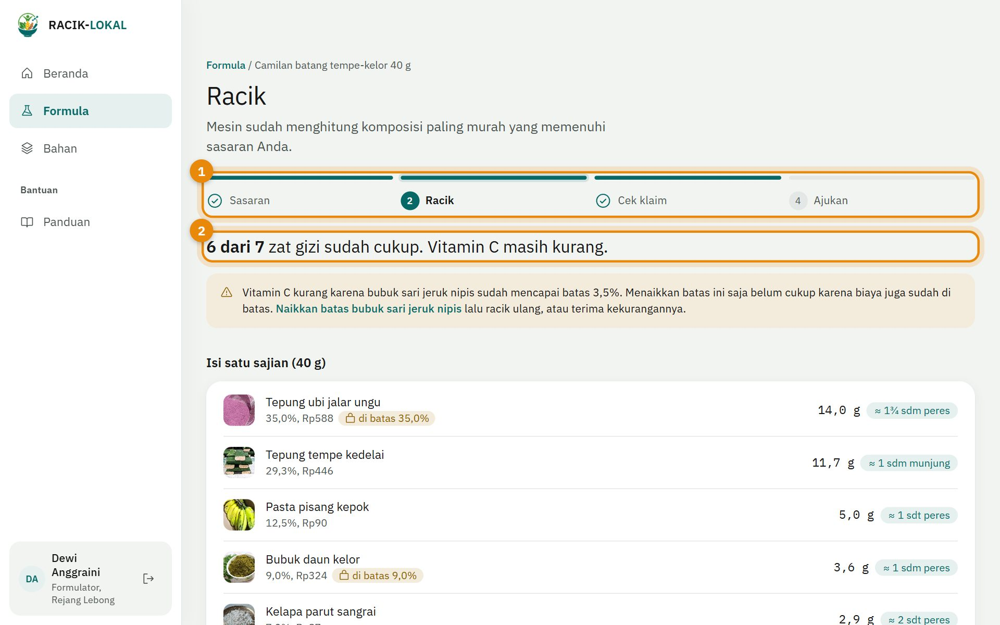
Versi prototipe, Oktober 2026Semua angka di aplikasi adalah data contoh
Isi panduan
1Kenalan dengan RACIK-LOKAL
2Masuk ke aplikasi
3Beranda dan formula baru
4Langkah 1: Sasaran
5Langkah 2: Racik
6Langkah 3: Cek klaim
7Langkah 4: Ajukan
8Bahan, foto, dan takaran sendok
9Untuk ahli gizi: Tinjau
10Untuk koordinator: Pilot
11Tips dan batasan
1
Kenalan dengan RACIK-LOKAL
RACIK-LOKAL membantu Anda menyusun formula camilan yang cukup zat gizi untuk remaja putri dengan biaya bahan serendah mungkin.
Anda cukup menentukan untuk siapa camilan dibuat dan berapa biaya maksimalnya. Mesin Racik lalu menghitung berapa gram tiap bahan yang perlu dipakai, memeriksa klaim gizi yang boleh ditulis di label, dan menyiapkan formula untuk ditinjau ahli gizi.
Alur kerja
1SasaranUntuk siapa dan berapa biayanya
2RacikGram tiap bahan dan gizinya
3Cek klaimKlaim label yang boleh dipakai
4AjukanKirim ke ahli gizi
✓TinjauAhli gizi menyetujui atau meminta revisi
Siapa memakai apa
Peran
Tugas utama
Akun contoh
Formulator (UMKM)
Membuat formula, meracik, memeriksa klaim, lalu mengajukan.
dewi@contoh.id
Peninjau (ahli gizi)
Meninjau formula, mengubah batas bahan, serta mengelola data bahan dan takaran.
rina@contoh.id
Koordinator pilot
Memantau asupan zat besi peserta, batch produksi, dan hasil uji lab.
rian@contoh.id
Admin
Mengelola pengguna dan semua data.
admin@contoh.id
Kata sandi semua akun contoh: racik-lokal-2026. Akun ini hanya untuk mencoba prototipe.
2
Masuk ke aplikasi
Buka alamat aplikasi di peramban ponsel atau laptop. Aplikasi juga bisa dipasang ke layar utama ponsel.
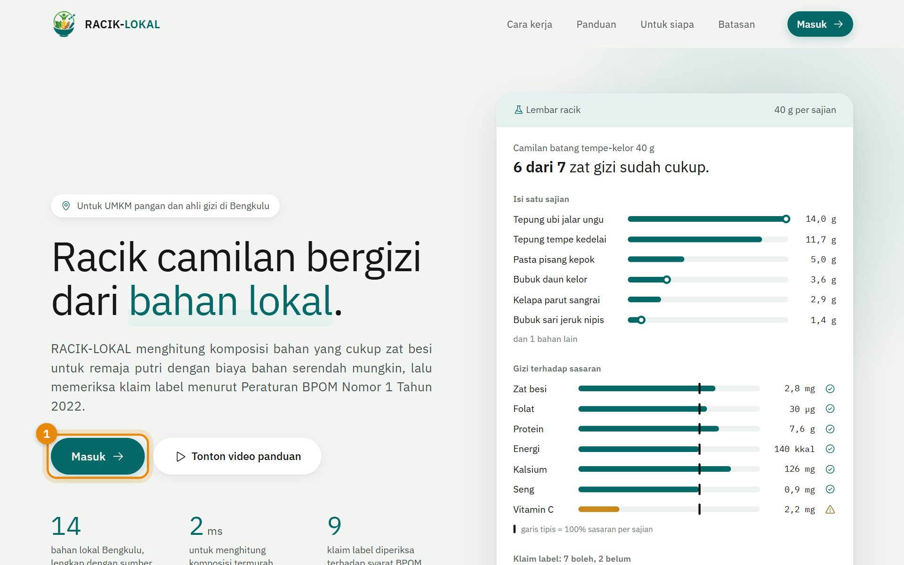
Di halaman awal, tekan Masuk. Anda juga bisa menonton video cara pakai dan mengunduh panduan ini dari halaman awal.
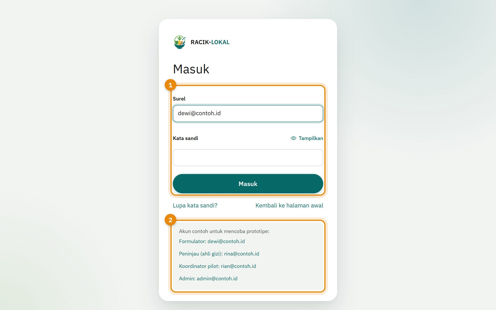
Isi surel dan kata sandi, lalu tekan Masuk.
Untuk mencoba, pakai salah satu akun contoh yang tertera di bawah tombol.
3
Beranda dan formula baru
Beranda selalu menampilkan pekerjaan terakhir Anda, jadi Anda bisa langsung melanjutkan.
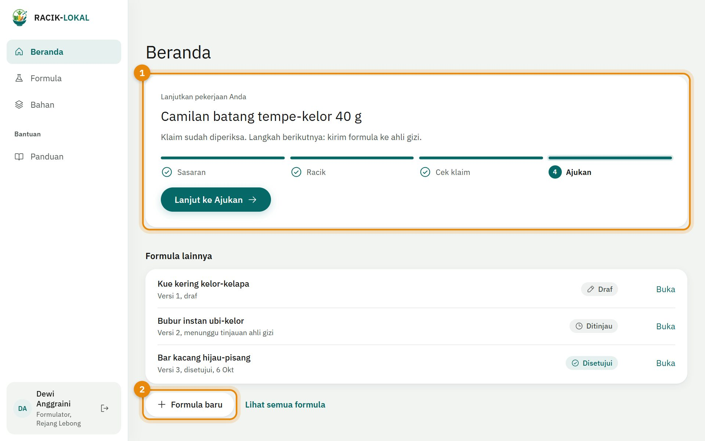
Kartu Lanjutkan pekerjaan Anda menunjukkan formula terakhir dan langkah berikutnya. Tekan tombolnya untuk melanjutkan.
Tekan Formula baru untuk mulai meracik dari awal.
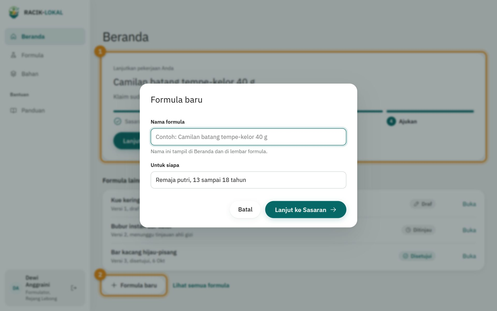
Beri nama formula, misalnya "Camilan batang tempe-kelor 40 g", pilih kelompok sasaran, lalu tekan Lanjut ke Sasaran.
4
Langkah 1: Sasaran
Beri tahu aplikasi untuk siapa camilan ini dan berapa biayanya. Target gizi terisi otomatis.
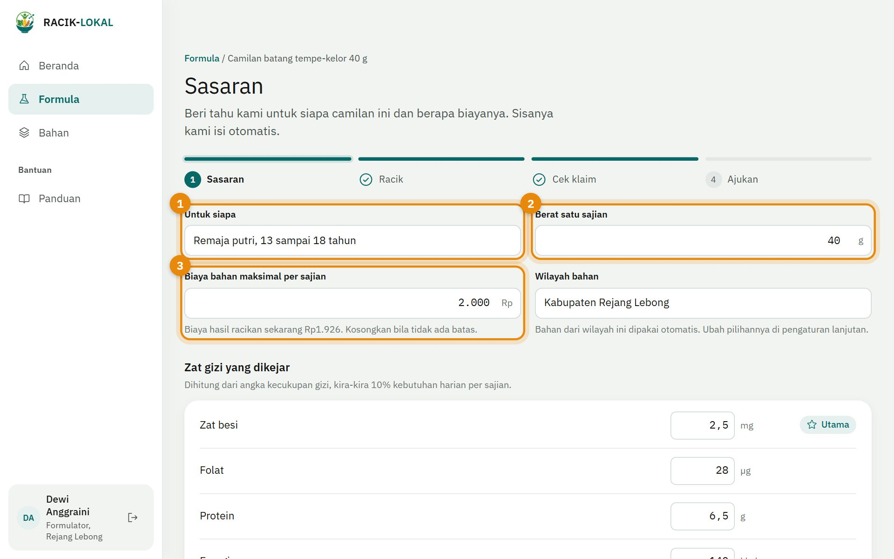
Untuk siapa: pilih kelompok, misalnya remaja putri 13 sampai 18 tahun. Target gizi per sajian ikut berubah.
Berat satu sajian dalam gram, misalnya 40 g untuk satu batang camilan.
Biaya bahan maksimal per sajian. Kosongkan bila tidak ada batas.
Tekan Lanjut ke Racik. Mesin langsung menghitung.
TipsBagian Pengaturan lanjutan di bawah formulir berisi zat gizi lain, bahan yang boleh dipakai, dan batas pemakaian. Biarkan saja bila Anda belum yakin; nilai bawaannya sudah aman.
5
Langkah 2: Racik
Mesin Racik memilih komposisi bahan paling murah yang memenuhi sasaran gizi Anda.
Penanda langkah menunjukkan posisi Anda: Sasaran, Racik, Cek klaim, Ajukan.
Kalimat jawaban merangkum hasil, misalnya "6 dari 7 zat gizi sudah cukup". Di bawahnya ada penjelasan bila ada zat gizi yang kurang, beserta tombol untuk memperbaikinya.
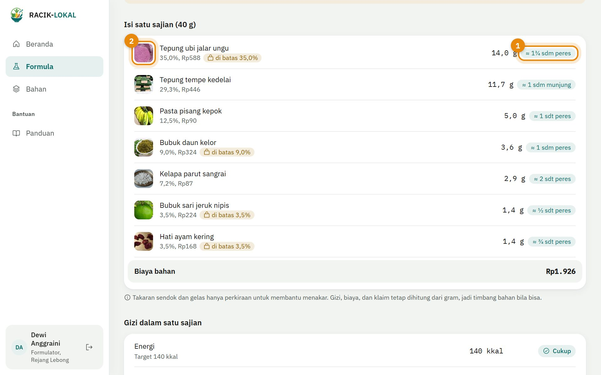
Takaran sendok di samping gram, misalnya "14,0 g ≈ 1¾ sdm peres". Ini membantu Anda yang biasa menakar dengan sendok atau gelas. Takaran hanya perkiraan: gizi, biaya, dan klaim selalu dihitung dari gram, jadi timbang bahan bila bisa.
Foto bahan membantu Anda mengenali bahannya.
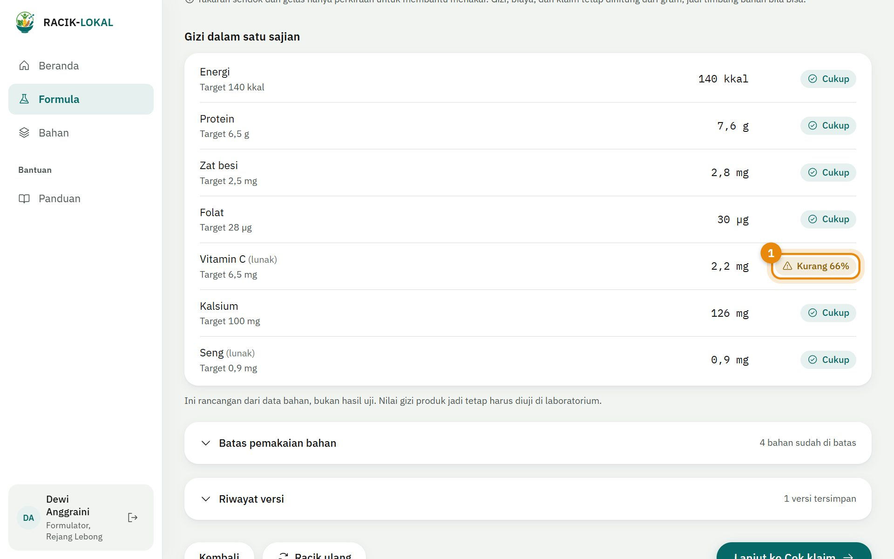
Gizi dalam satu sajian dibandingkan dengan target. Status Cukup bertanda centang; status Kurang bertanda segitiga beserta persentase kekurangannya.
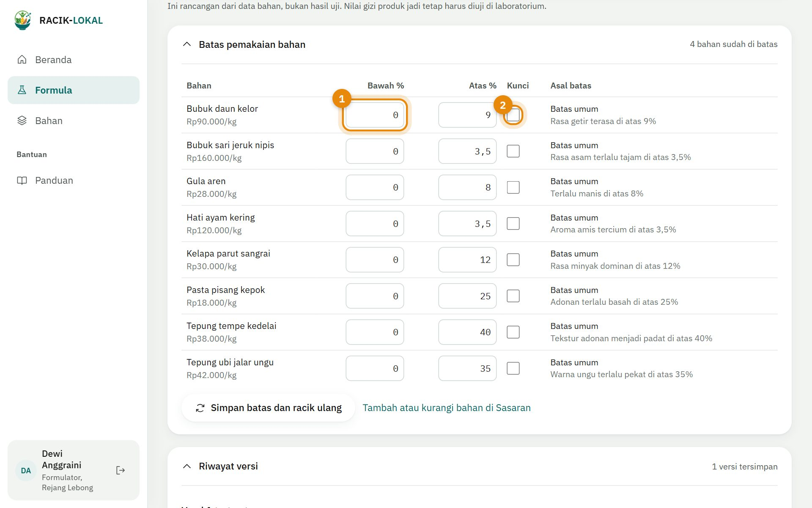
Buka Batas pemakaian bahan untuk mengatur persen terendah dan tertinggi tiap bahan, misalnya bila rasa kelor terlalu getir. Tekan Simpan batas dan racik ulang.
Centang Kunci agar bahan dipakai tepat sebesar batas bawahnya.
Riwayat versi dan eksporSetiap kali Anda meracik, hasilnya tersimpan sebagai versi baru. Buka Riwayat versi untuk membandingkan versi atau mengunduh hasilnya sebagai CSV, lengkap dengan kolom takaran sendok.
6
Langkah 3: Cek klaim
Label hanya boleh memuat klaim gizi yang memenuhi syarat BPOM. Aplikasi memeriksanya untuk Anda.
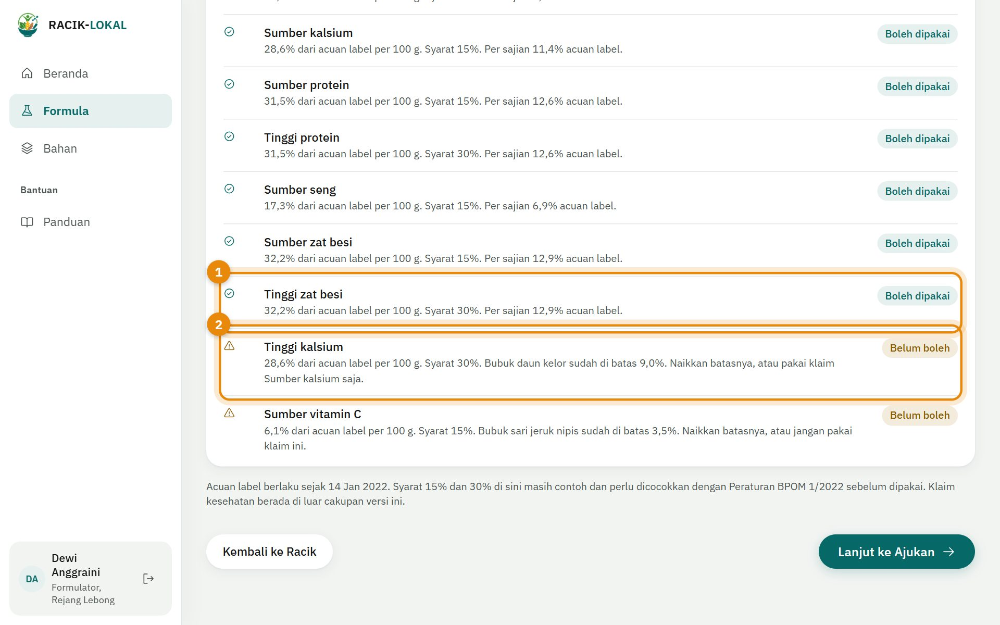
Boleh dipakai: klaim memenuhi syarat. Jumlahnya dirangkum di kalimat paling atas layar.
Belum boleh: klaim belum memenuhi syarat. Baca sarannya, misalnya menaikkan bahan tertentu sedikit, atau pakai klaim yang lebih ringan.
Perlu diingatAmbang 15% dan 30% di prototipe masih contoh dan perlu dicocokkan dengan teks resmi Peraturan BPOM Nomor 1 Tahun 2022. Nilai gizi produk jadi tetap harus diuji di laboratorium.
7
Langkah 4: Ajukan
Kirim formula ke ahli gizi untuk ditinjau. Anda masih bisa mengubahnya sampai ditinjau.
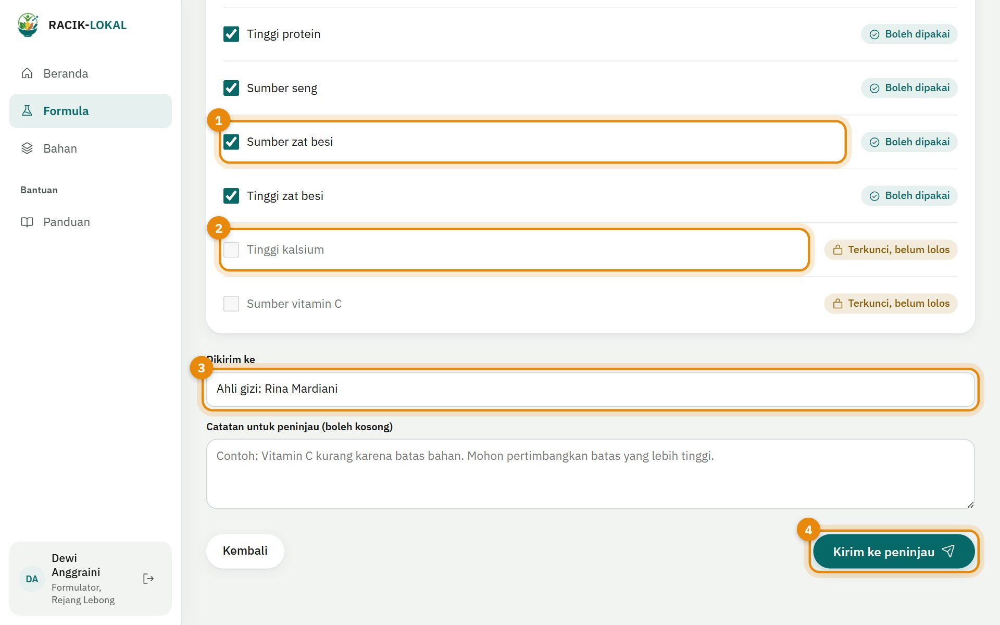
Centang klaim yang ingin Anda cantumkan di label.
Klaim yang belum lolos terkunci dan tidak bisa dipilih.
Pilih ahli gizi yang akan meninjau. Tambahkan catatan bila perlu.
Tekan Kirim ke peninjau. Status formula berubah menjadi Ditinjau.
8
Bahan, foto, dan takaran sendok
Menu Bahan berisi semua bahan lokal beserta foto, harga, kandungan gizi, dan sumber datanya.
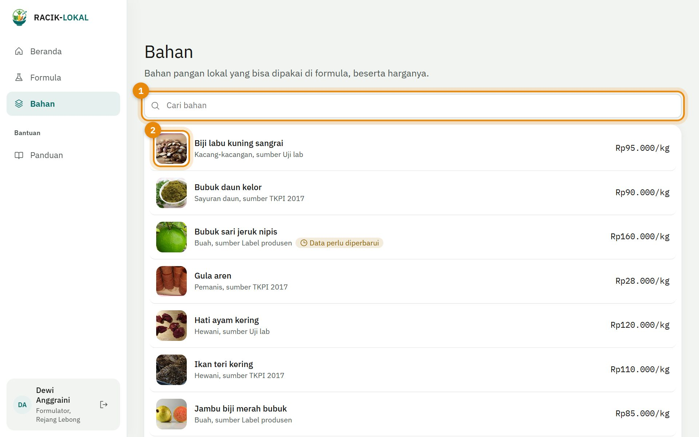
Cari bahan menurut nama atau kelompok.
Foto menunjukkan bentuk asli bahan agar Anda tidak bingung bahan ini apa. Untuk bahan olahan, fotonya menunjukkan bahan asalnya.
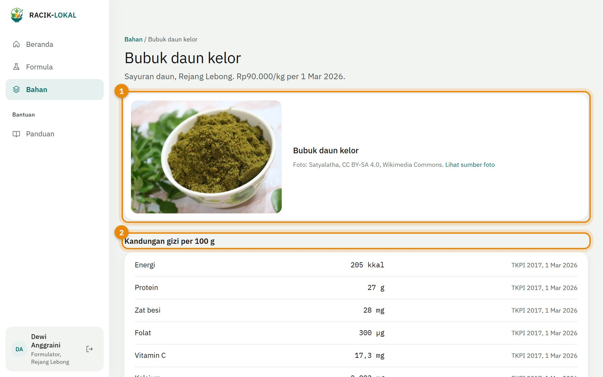
Foto bahan beserta keterangan, nama pemotret, dan lisensinya.
Kandungan gizi per 100 g. Setiap nilai punya sumber dan tanggal. Data yang berumur lebih dari 12 bulan diberi tanda Data perlu diperbarui.
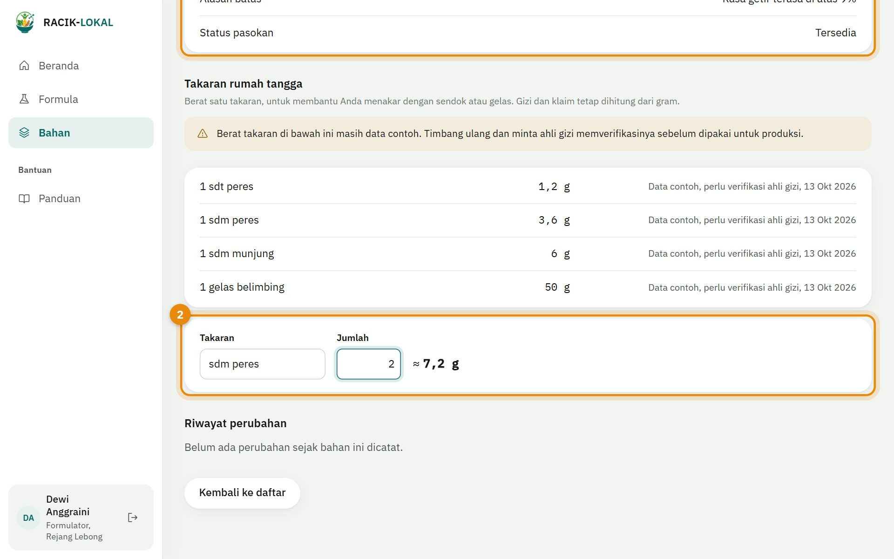
Tabel Takaran rumah tangga: berat 1 sdt peres, 1 sdm peres, 1 sdm munjung, dan 1 gelas belimbing untuk bahan ini.
Kalkulator: pilih takaran, isi jumlah (misalnya 2, 1½, atau 0,5), lalu beratnya dalam gram langsung muncul.
Arti takaranPeres: sendok diisi lalu diratakan. Munjung: sendok diisi sampai menggunung. Gelas belimbing: gelas bening bergerigi sekitar 200 ml.
Masih data contohBerat takaran di prototipe belum ditimbang. Ahli gizi atau Admin bisa menimbang ulang lalu mengubahnya lewat tombol Ubah di halaman bahan.
9
Untuk ahli gizi: Tinjau
Formula yang diajukan muncul di Beranda ahli gizi. Buka formulanya, periksa isinya, lalu beri keputusan.
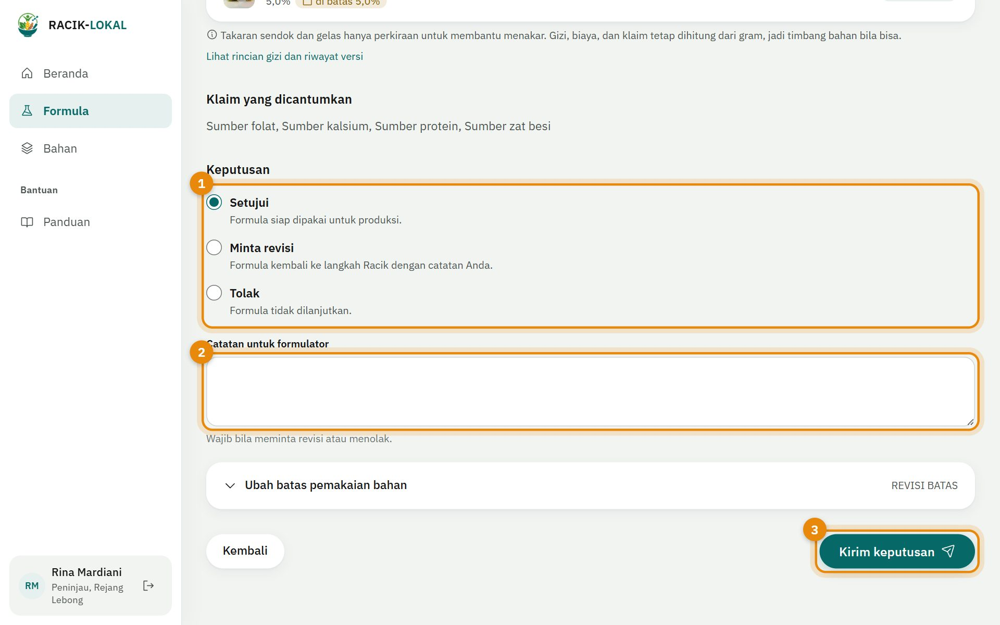
Pilih keputusan: Setujui (siap produksi), Minta revisi (kembali ke Racik), atau Tolak.
Tulis catatan untuk formulator. Catatan wajib diisi bila meminta revisi atau menolak.
Tekan Kirim keputusan. Bila Anda mengubah batas bahan di bagian Ubah batas pemakaian bahan, formula kembali ke langkah Racik.
10
Untuk koordinator: Pilot
Pantau uji coba di lapangan: asupan zat besi peserta, biaya nyata, dan hasil uji lab tiap batch.
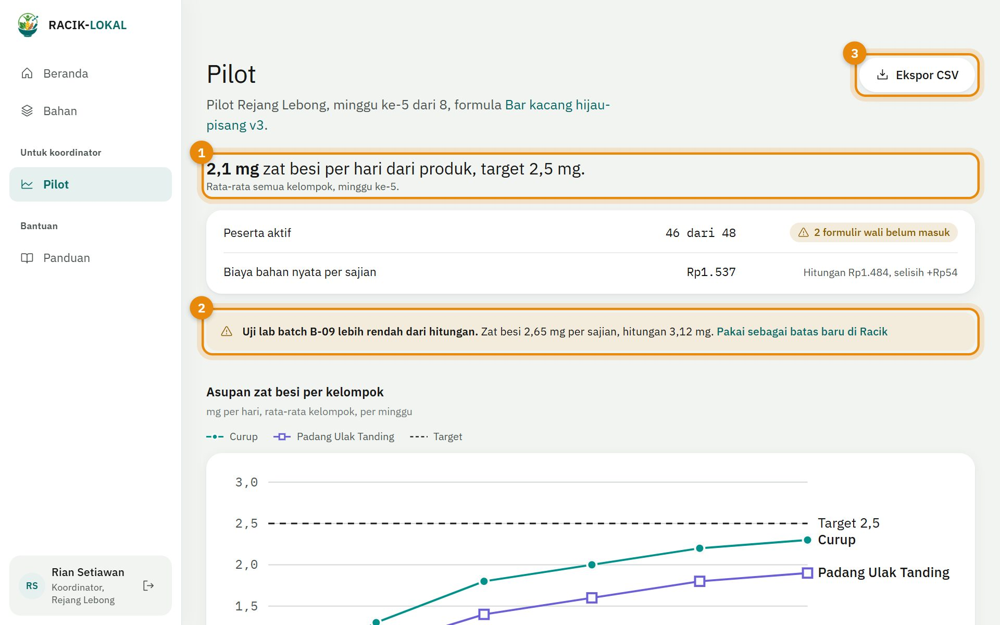
Ringkasan asupan zat besi dari produk dibandingkan target.
Peringatan bila hasil uji lab lebih rendah dari hitungan. Tekan tautannya untuk memakai hasil lab sebagai batas baru di Racik.
Ekspor CSV untuk mengolah data di Excel.
11
Tips dan batasan
Pertanyaan yang sering muncul
Hasil Racik bilang "tanpa solusi".
Sasaran terlalu tinggi untuk biaya atau batas bahan yang ada. Ikuti saran di layar satu per satu, misalnya menaikkan biaya maksimal atau batas atas bahan.
Zat gizi masih kurang.
Tekan tautan di pesan kuning, misalnya Naikkan batas bubuk sari jeruk nipis, lalu racik ulang. Anda juga boleh menerima kekurangannya.
Saya tidak punya timbangan.
Pakai takaran sendok di samping gram. Hasilnya perkiraan, jadi timbang bila nanti sudah ada timbangan.
Saya tidak kenal bahannya.
Buka menu Bahan dan lihat fotonya. Foto bahan olahan menunjukkan bahan asalnya.
Formula sudah disetujui, tetapi saya meracik ulang.
Meracik ulang membuat versi baru berstatus Draf yang perlu diajukan lagi. Versi lama tetap tersimpan.
Batasan
Ini prototipeSemua angka gizi, harga, dan takaran adalah data contoh, bukan data TKPI dan bukan hasil uji laboratorium. Hasil Racik adalah rancangan; nilai gizi produk jadi tetap harus diuji di laboratorium. Aplikasi tidak memberi saran medis, tidak menggantikan tablet tambah darah, dan tidak mengajukan izin edar ke BPOM.
Kredit foto
Foto bahan diambil dari Wikimedia Commons dengan lisensi bebas (CC0, CC BY, dan CC BY-SA). Nama pemotret, lisensi, dan tautan sumber tercantum di halaman setiap bahan.